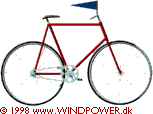
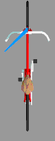

Aerodynamics of Wind Turbines

Adding
Wind Speeds and Directions (Wind Velocities)
 The wind which hits
the rotor blades of a wind turbine will not come from the direction in which
the wind is blowing in the landscape, i.e. from the front of the turbine.
This is because the rotor blades themselves are moving.
The wind which hits
the rotor blades of a wind turbine will not come from the direction in which
the wind is blowing in the landscape, i.e. from the front of the turbine.
This is because the rotor blades themselves are moving.
 To understand this, consider the picture of a bicycle which is equipped
with a blue banner (or a wind vane) to indicate the direction of the wind:
If we have completely calm weather, and the bicycles moves forwards, with,
say, 7 metres per second (14 knots), the bicycle will be moving through
the air at 7 metres per second. On the bicycle we can measure a wind speed
of 7 metres per second relative to the bicycle. The banner will point straight
backwards, because the wind will come directly from the front of the bicycle.
To understand this, consider the picture of a bicycle which is equipped
with a blue banner (or a wind vane) to indicate the direction of the wind:
If we have completely calm weather, and the bicycles moves forwards, with,
say, 7 metres per second (14 knots), the bicycle will be moving through
the air at 7 metres per second. On the bicycle we can measure a wind speed
of 7 metres per second relative to the bicycle. The banner will point straight
backwards, because the wind will come directly from the front of the bicycle.
Now, let us look
at the bicycle again directly from above, and let us assume that the bicycle
moves forward at a constant speed of, once again, 7 metres per second. If
the wind is blowing directly from the right, also at 7 metres per second,
the banner will clearly be blown partly to the left, at a 45 degree angle
relative to the bicycle. With a bit less wind, e.g. 5 metres per second,
the banner will be blown less to the left, and the angle will be some 35
degrees. As you can see from the picture, the direction of the wind, the
resulting wind as measured from the bicycle, will change whenever the
speed of the wind changes.
 What about the wind speed measured from the bicycle?
What about the wind speed measured from the bicycle?
 The wind is, so to speak, blowing at a rate of 7 metres per second from
the front and 5 to 7 metres per second from the right. If you know a bit
of geometry or trigonometry you can work out that the wind speed measured
on the bicycle will be between 8.6 and 9.9 metres per second.
The wind is, so to speak, blowing at a rate of 7 metres per second from
the front and 5 to 7 metres per second from the right. If you know a bit
of geometry or trigonometry you can work out that the wind speed measured
on the bicycle will be between 8.6 and 9.9 metres per second.
 Enough about changing wind directions, now what about the wind turbine
rotor?
Enough about changing wind directions, now what about the wind turbine
rotor?

|
Back | Home | Forward |
© Copyright 1998 Soren Krohn. All rights reserved.
Updated 6 August 2000
http://windpower.dk/tour/wtrb/aerodyn2.htm